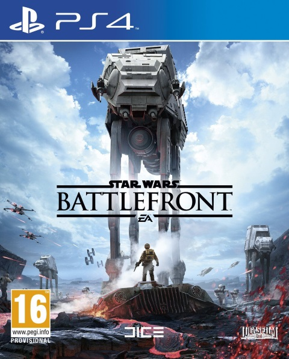

|  |
Star Wars: BattlefrontStar Wars Battlefront é um jogo de acção de tiro na primeira e na terceira pessoa, produzido pela EA Digital Illusions CE e baseado na franquia Star Wars. Foi publicado pela Electronic Arts com a chancela da LucasArts a 17 de Novembro de 2015 para Microsoft Windows, PlayStation 4 e Xbox One.
R$ 120,80
|